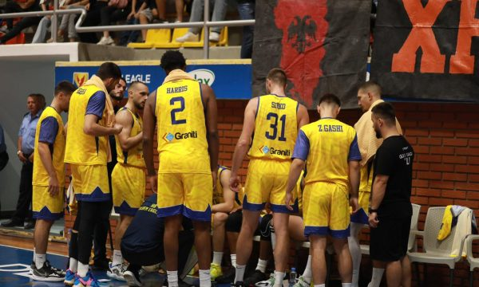

Ylli triumfon ndaj Vëllaznimit
Golden Eagle Ylli ka triumfuar ndaj Vëllaznimit në javën e 12-të në Superligën e Kosovës. Ylli fitoi me rezultatin 83:75. Ndeshja u zhvillua në palestrën sportive “13 Qershori” në Therandë. Jan Palokaj me 25 pikë dhe Jalen Nesbitt me 23 sosh, ishin dy basketbollistët më meritorë në fitoren e therandasve.